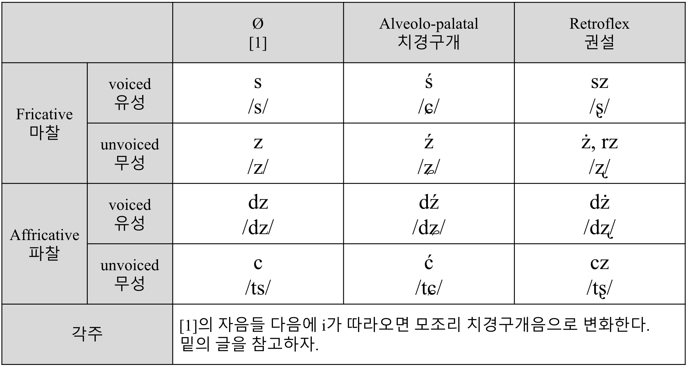

#언어이야기 3
체코어 공부를 하다가, 이왕 체코어 하는 김에 그냥 폴란드어를 하자고 결심해 폴란드어로 갈아탔다. 폴란드어가 정자법도 굉장히 흥미로워 보였을 뿐만 아니라 발음도 체코어보다 더 맘에 들었다.
폴란드어를 모르는 상태에서 보면 첫인상이 강렬하게 남는다. 정말 단어들이 w, s, z로만 이루어져 있는 것처럼 보일 정도로 단어들 스펠링이 괴랄하다. (근데 이게 사실 틀린 말이 아니다. 유엔 인권 선언의 폴란드어 버전 첫 단어가 zważywszy인데, 발음이 ‘즈바줴브셰’이다.)
실제로 발음법도 어려워서 완전히 습득하는데에 1시간은 족히 걸렸던 것 같다.
폴란드어 발음법을 배우고 싶다면 이 영상을 추천한다. 음질이 좋아 발음이 잘 들리고 각 알파벳마다 예시 단어들 3개를 보여주기 때문에 발음 습득하기에 좋다.
정말 전형적인 슬라브 언어이다. 파찰음이 굉장히 다양하다. 체코어보다 많아 처음에 좀 당황스러웠다. 특히 rz, sz, cz, ś, ć, ż를 보고 치경구개 파찰음인지 권설 파찰음인지 구별해내는게 헷갈렸다. 이참에 다음 표로 정리해보았다. 어느 정도 정리가 될 것이다. 
한국어 용어에 이제 슬슬 익숙해져야 할 것 같아 영어 용어와 병기해놓았다.
눈에 띄는 것은 rz. 직관적으로 보면 체코어의 ř과 연관이 있어 보인다. 그리고 실제로 그렇다! 체코어로 '강'이 řeka인데, 폴란드어로는 rzeka이다.
그리고 위키피디아 ‘Help: IPA/Polish’ 글에서 보충 설명을 찾았는데 읽어보길 바란다:
The letter ⟨i⟩, when it is followed by a vowel, represents a pronunciation like a ⟨j⟩ or a "soft" pronunciation of the preceding consonant (so pies is pronounced as if it were spelt ⟨pjes⟩). It has the same effect as an acute accent on alveolar consonants (⟨s⟩, ⟨z⟩, ⟨c⟩, ⟨dz⟩, ⟨n⟩) so się, cios and niania are pronounced as if they were spelt ⟨śę⟩, ⟨ćos⟩, ⟨ńańa⟩. A following ⟨i⟩ also softens consonants when it is itself pronounced as a vowel: zima, ci and dzisiaj are pronounced as if they were spelled ⟨źima⟩, ⟨ći⟩, ⟨dźiśaj⟩.
아마 러시아어를 공부해본 사람이라면 soft consonant같은게 뭔지는 쉽게 이해가 갈 것이다. 근데 잘 생각해보면 이 현상, 한국어와 일본어에서도 쉽게 관찰할 수 있는 현상이다. 그렇게 낯설어 할 필요는 없다. ‘소’와 ‘시’를 발음하면서 ‘ㅅ’의 조음 위치를 비교해보면 답이 나온다.
어쨌든, 다시 본론으로 돌아오자면, 직접 폴란드어 발음을 연습해보니 폴란드어를 사용하는 사람들이 체코어를 듣고 왜 어린아이들 장난처럼 들린다고 하는지 그 이유를 알 것 같더라. 정확하지 않을 수 있는데, 보통 체코어 형용사가 남성형일 때 -ý로 끝나 ‘이’를 길게 뺀 발음이 나는데, 같은 단어 폴란드어 형용사는 보통 -y로 끝나 ‘으’ 발음이 난다. 애초에 체코어에서는 y를 i와 같은 전설 고모음으로 발음하지만 폴란드어에서 y는 거의 슈와처럼 읽히기 때문에, 폴란드어 입장에서 체코어는 밝으면서 어린아이같은 느낌이 나는 것 같다.
앞으로 폴란드어를 진짜 열심히 공부해야겠다. 체코어는 폴란드어 어느 정도 하면 자동으로 되지 않을까 조심스레 예상해본다.